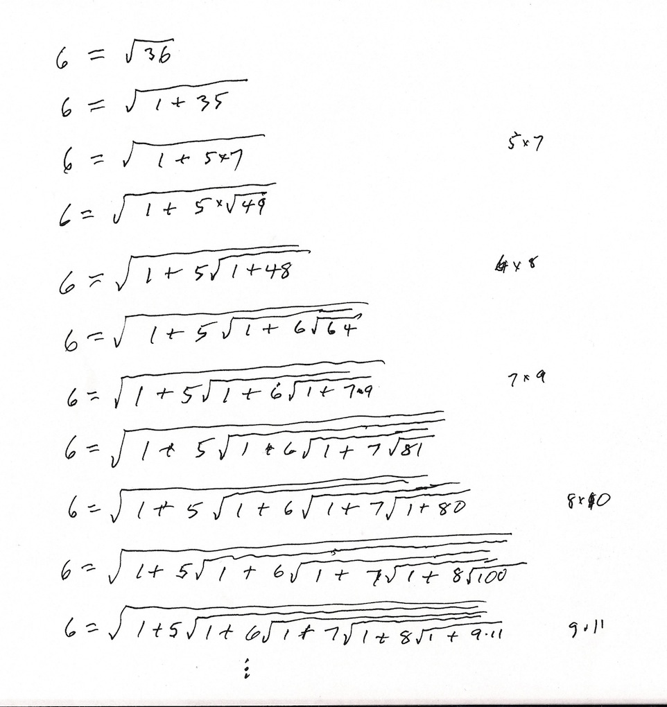
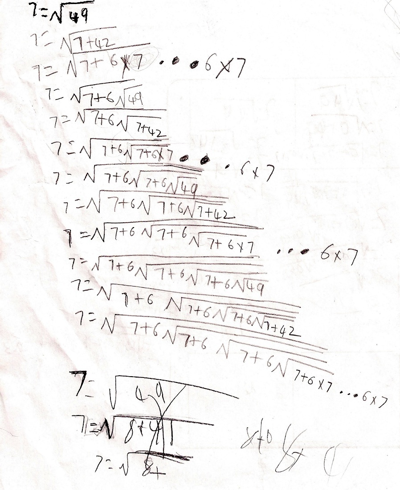
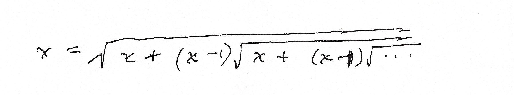
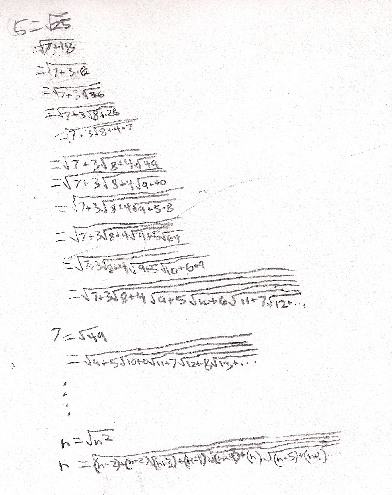

Studying
Ramanajan's Nest of Square Roots Giving a Number
Don read the biography of Ramanujan: "The Man Who Knew Infinity- A Life
of the Genius Ramanujan" by Robert Kanigel, years ago, but never
studied his works until he saw the 3 books in the following series
during the summer of 2011. The mother of one of Don's students let him
borrow 2 of the books, the Primary School and the Middle School. He
started working on some of Ramanujan's problems.
AN INTRODUCTION TO
CREATIVITY OF RAMANUJAN
AS
SUPER STUDENT STAR
by
P.K. SRINIVASAN
An Instructional Guide To
Mathematics Teachers
in
MIDDLE SCHOOL
a publication of
THE ASSOCIATION OF
MATHEMTICS TEACHERS OF INDIA, Chennai.
E-Mail: amti@vsnl.com
__________________________________________________________________________________
Don got interested in the Nest of Square Roots Giving a Number. He also
started showing what he did to some of his students. Don made his first
one below:

Don was intrigued by all the patterns above.
Don worked with Shouri, a 3rd grader, the following week he came up
with this nest:

Don never saw one like Shouri did here- he repeated the 6*7 ! Shouri
also tried breaking 49 into 8+41 above, but evidently he realized 41 was
prime and went no further.Shouri also came up with the
generalzation:

Fine
Work, Shouri !
Grant's work and his
generalization following Ramanujan:

Another new
thing that Don had not seen before! But he checked to see if that worked and
it did.
Great work, Grant!
Don had Grant send
an email to Prof. Bruce Berndt at the U of Illinois math department, who has
written books about Ramanujan's notebooks. He encouraged Grant to find other
generalizations using the nested square roots.
Tune in for the next exciting work following Ramanujan.